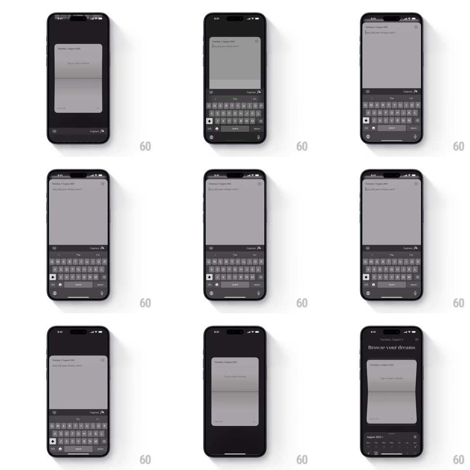

Media
Frame-by-frame

Rebuild this interaction 1:1: Yume's editor card - the journal card springs up to a full-screen writing view with the keyboard, and when the keyboard dismisses the card scales back down with a soft 3D tilt into the browse list.

Rebuild this interaction 1:1: Yume's editor card - the journal card springs up to a full-screen writing view with the keyboard, and when the keyboard dismisses the card scales back down with a soft 3D tilt into the browse list.
## Integration
Integration: stack-agnostic spec - springs given as stiffness/damping, timed motions as duration + curve; map every value to your framework and animation library of choice.
## Scene
Dark journal app: "Browse your dreams" list with a journal card over the month strip; expanded state is a full-screen editor ("how did your dream start?") with the keyboard up and a "Capture" action.
## Motion spec
Pattern: spring card-to-editor scaling keyed to the keyboard, ~400ms.
- Open: the card scales to full screen (spring ~300/24, 380ms), header and month strip fading (200ms) as the keyboard rises (matches the system curve).
- Dismiss: the keyboard slides away first; as it leaves, the card tilts slightly (rotateX ~8deg, perspective 1000px) and scales back to its list slot (spring ~340/22, 420ms) while the list chrome fades back in (200ms).
- The card overshoots its slot by ~3% on the way home and settles.
- Text content stays legible throughout - it scales with the card, no relayout flash.
## Calibration
- The keyboard drives the timing: the card's return starts as the keyboard's dismissal begins, not after it ends.
- The tilt peaks mid-flight and is zero at both ends.
## Reduced motion
Plain scale and fade, no tilt or overshoot.
## Don't miss
- The return has a small overshoot - it is a spring, not a linear shrink.
- The browse chrome returns with the card, not before it.